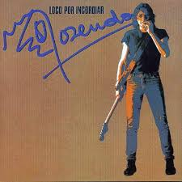
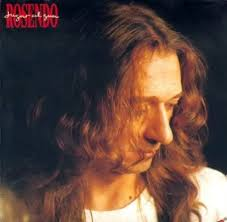

Álbumes icónicos (1985–1988)
Cuatro discos fundamentales del arranque en solitario de Rosendo. Pulsa sobre cada portada para ver la ficha con portada, canciones y letras.
Galería de álbumes
Loco por incordiar (1985)

Fuera de lugar (1986)

…A las lombrices (1987)

Jugar al gua (1988)
